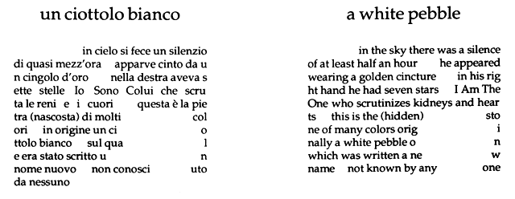
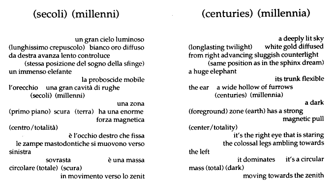

read the author's Bio and Working Notes go to this issue's table of contents



by Giovanna Sandri --translated by Fausto Pauluzzi.
|
read the author's Bio and Working Notes go to this issue's table of contents
|